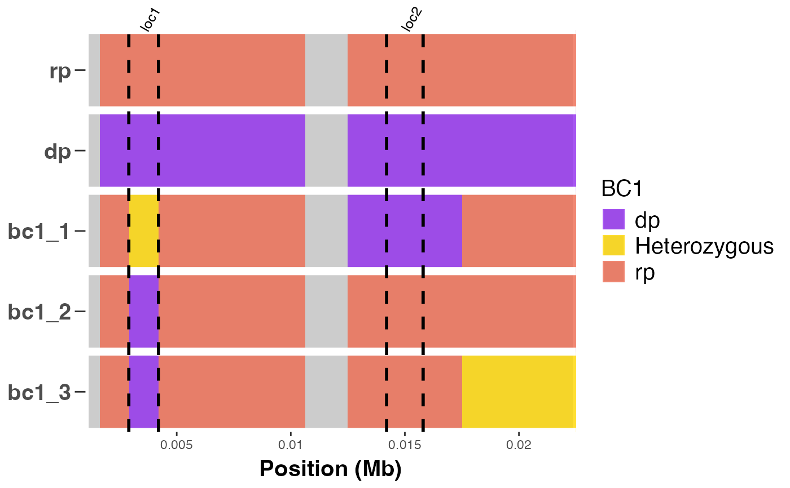

Annotate a heatmap to show introgressed loci positions.
Usage
cross_qc_annotate(
x,
map_file,
snp_ids = "snpid",
chr = "chr",
chr_pos = "pos",
parents,
trait_pos,
group_sz = nrow(x) - 2,
pdf = FALSE,
filename = "background_heatmap",
legend_title = "Heatmap_key",
col_mapping,
col_labels,
alpha = 0.9,
text_size = 12,
text_scale_fct = 0.5,
width = 10.5,
height = 8.5,
...
)Arguments
- x
A numeric matrix with marker IDs as columns and sample IDs as row names.
- map_file
A data frame of map file consisting of SNP IDs and their chromosome numbers and positions as columns.
- snp_ids
A character value indicating the column name for marker IDs in
x.- chr
A character value indicating the column name for chromosome IDs in
x.- chr_pos
A character value indicating the column name for chromosome positions in
x.- parents
A character vector of length = 2 for the IDs of parents.
- trait_pos
A list object where the components correspond to the start and end positions of trait loci to annotate on the heapmap.
- group_sz
A positive integer value indicating the batch size for progenies to include in heatmap.
A logical value indicating whether to save plot as a pdf graphic device when TRUE or output plot in R when FALSE.
- filename
A character value for path or file name for saving pdf.
- legend_title
A character value for specifying plot legend title.
- col_mapping
A character vector of length = 6 for heatmap color mapping.
- col_labels
A character vector of length = 6 for labels corresponding to the color mapping.
- alpha
A numeric value between 0 and 1 for modifying the opacity of colors.
- text_size
A numeric value for setting text size.
- text_scale_fct
A numeric value for scaling text size. The default value is `50%` of the defined text size.
- width
A numeric value for the width of pdf device.
- height
A numeric value for the height of pdf device.
- ...
Other valid arguments that can be passed to ggplot2.
Examples
# \donttest{
# example code
library(panGenomeBreedr)
# Create a numeric matrix of genotype scores for 10 markers and 5 samples
num_dat <- matrix(c(rep(1, 10), rep(0, 10),
1, 1, 0.5, 1, 1, 1, 1, 1, 0, 1,
1, 1, 0, 1, 1, 1, 1, 1, 1, 1,
1, 1, 0, 1, 1, 1, 1, 1, 1, 0.5 ),
byrow = TRUE, ncol = 10)
rownames(num_dat) <- c('rp', 'dp', paste0('bc1_', 1:3))
colnames(num_dat) <- paste0('S1', '_', c(floor(seq(1000, 10000, len = 8)),
15000, 20000))
# Get map file by parsing SNP IDs
map_file <- parse_marker_ns(colnames(num_dat))
# Annotate a heatmap to show trait loci positions
cross_qc_annotate(x = num_dat,
map_file = map_file,
snp_ids = 'snpid',
chr = 'chr',
chr_pos = 'pos',
parents = c('rp', 'dp'),
trait_pos = list(loc1 = c(start = 2900, end = 4200),
loc2 = c(start = 14200, end = 15800)),
text_scale_fct = 0.5,
group_sz = 3L,
pdf = FALSE,
legend_title = 'BC1',
alpha = 0.8,
text_size = 15)
#> $Batch1

#>
# }